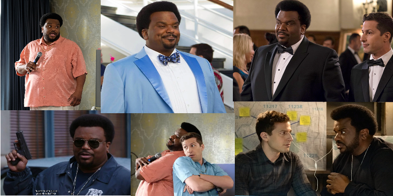

Doug Judy
Doug Judy is a thief, con artist and nicknamed ‘The Pontiac Bandit’ as he is notorious for stealing over 200 Pontiacs. He was the arch-enemy of Jake Peralta, however that changed when he was found to have a similar personality, immature, a love of pop culture and being very laid back towards any situation. He also has a massive crush on Rosa Diaz, who worked alongside Jake on any case to catch Doug. As mentioned before Doug Judy is very immature, and often uses jokes and silly songs to weasel out of situations with Jake. He is very calm and never loses his temper and always remains cheerful. Despite this, he is very cunning and intelligent, due to him being able to escape Jake Peralta on numerous occasions. An example of this would be in series one where he managed to convince Jake that he could lead him to the Pontiac bandit, little Jake know that he was the Pontiac bandit, and he managed to form an elaborate distraction, framing his barber. He then revealed it was, in fact, him that was the Pontiac bandit before escaping. As the show goes on many similar escapades happen, and he can escape again multiple times. Doug Judy also likes to make fun of the fact that they are arch-nemesis and make up a theme song about it. Despite being a criminal he has a sensitive side and even takes Jake and Rosa to meet his real mother so that he could say goodbye to her before he leaves. He is also capable of disliking people and showing it, for example, his adopted brother, who stole important things from him. He also is kind to the squad and makes sure that he can help them where he can, despite them frequently trying to arrest him due to him being a criminal. Doug Judy is also extremely protective of his younger sister Trudy Judy, and is reluctant to believe that she could do anything wrong and will turn out perfectly, however, when the opposite happens he still refuses to believe it. He lies to his mother about what he does with his life and she believes that he runs an architect firm, which Jake also works at.
